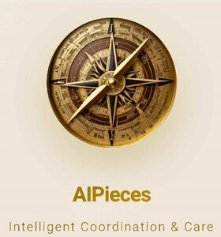

Trade Mark Journal No.2025/033 15 August 2025
UK00004243671 4 August 2025 (9,35,42)

- Class 9
- Computer software; Computer application software; Computer interface software; Computer application software for TV; Computer software applications; Computer application software for use with wearable computer devices; Computer game software; Interactive computer software; Downloadable computer software; Computer graphics software; Computer e-commerce software; Computer whiteboard software; Computer application software for mobile phones; Smartphone software; Computer software downloaded from the internet; Computer software programs; Computer software applications, downloadable; Downloadable computer software applications; Computer software platforms; Computer programming software; Computer software for computer aided software engineering; Computer games software; Computer gaming software; Computer software for advertising; Educational computer software; Computer software for mobile phones; Computer software downloadable from the internet; Computer operating software; Downloadable computer utility software; Computer game software downloadable from a global computer network; Downloadable computer security software; Computer software for encryption; Programs (Computer -) [downloadable software]; Computer programs [downloadable software]; Computer software downloadable from global computer networks; Computer firewall software; Computer software for entertainment; Computer telephony software; Downloadable computer game software; Computer game software, downloadable; Software; Software for tablet computers; Computer application software for mobile telephones; Computer software for the monitoring of computer systems; Computer software for accessing computer networks; Computer software packages; Software for computers; Computer software [programmes]; Downloadable computer software for blockchain technology; Computer video game software; Computer game software for use on mobile devices; Computer software for education; Computer programs and software for image processing used for mobile phones; Computer software for application and database integration; Recorded computer software; Computer software, recorded; Software (Computer -), recorded; Computer screen saver software; Mobile software; Computer games programs [software]; Computer software for database management; Computer software programs for spreadsheet management; Downloadable computer game software via a global computer network and wireless devices; Computer software downloadable from global computer information networks; Computer software development tools; Computer game software, recorded; Recorded computer game software; Computer games programs downloaded via the internet [software]; Downloadable computer software for the management of data; Downloadable computer software for use as an application programming interface (API); Computer operating system software; Computer software for use as an application programming interface (API); Computer software for testing vulnerability in computers and computer networks; Downloadable computer software for use as a digital wallet; Computer software programs for database management; Video games programs [computer software]; Smartphone software applications, downloadable; Computer screen saver software, recorded or downloadable; Network management computer software; Computer software for use in computer access control; Mobile application software.
- Class 35
- Retail services for computer software; Retail services in relation to computer software; Wholesale services in relation to computer software; Business management for freelance service providers; Computer database management services.
- Class 42
- Software as a service; Hosting services, software as a service, and rental of software; Software as a service [SAAS] services; Software as a service [SaaS]; Consulting services in the field of software as a service [SaaS]; Software as a service [SaaS] featuring software for machine learning; Software maintenance services; Computer software maintenance services; Services for maintenance of computer software; Platforms for gaming as software as a service [SaaS]; Software as a service [SaaS] featuring software for deep learning; Support and maintenance services for computer software; Software engineering services; Computer and software consultancy services; Computer software consultancy services; Software as a service [SaaS] featuring software platforms for electronic gaming; Computer software rental services; Computer software consulting services; Services for the design of computer software; Computer software design services; Software consulting services; Software development services; Application service provider (ASP) services, namely, hosting computer software applications of others; Services for the leasing of computer software; Software customisation services; Software as a service [SaaS] featuring computer software platforms for artificial intelligence; Computer software advisory services; Software consultancy services; Installation and maintenance services for software; Application service provider services; Software as a service [SaaS] featuring software platforms for graphic design; Computer software programming services; Software as a service [SaaS] featuring software for deep neural networks; Platforms for graphic design as software as a service [SaaS]; Services for updating computer software; Technical services for the downloading of software; Services for the writing of computer software; Computer software technical support services; Application service provider [ASP], namely, hosting computer software applications of others; Services for designing computer software; Consultancy services in relation to computer software; Software engineering services for data processing programs; Maintenance of software; Software engineering services for data processing; Professional advisory services relating to computer software; Application service provider [ASP] services; Platforms for artificial intelligence as software as a service [SaaS]; Installation of Access Control as a Service (ACaaS) software; Calibration services relating to computer software; Design services relating to computer software; Consulting services relating to computer software; Development services relating to computer software application solutions; Advisory services relating to the use of computer software; Advisory services relating to computer software design; Advisory services relating to computer software; Consultancy and information services relating to the design, programming and maintenance of computer software; Hosting of Access Control as a Service (ACaaS) servers and software; Computer software maintenance; Computer software (Maintenance of -); Maintenance of computer software; Software as a service [SaaS] services featuring software for machine learning, deep learning and deep neural networks; Services for the design of electronic data processing software; Information technology [IT] support services [troubleshooting of software]; Rental and maintenance of computer software; Advisory services relating to the rental of computers or computer software; Advisory services relating to computer software used for printing; Computer program maintenance services; Maintenance of software for communication systems; Consultation services relating to computer software; Advisory services relating to computer software used for publishing; Development and maintenance of computer database software; Development and maintenance of computer software; Technical support services relating to computer software and applications; Computer system integration services; Installation of software; Software installation; Computer software installation and maintenance; Consultancy and information services relating to computer software design; Installation and maintenance of computer software; Computer integration services; Computer software consultancy; Advisory services relating to computer software used for graphics; Consultancy (Computer software -); Advice and development services relating to computer software; Provision of on-line support services for computer program users; Research and consultancy services relating to computer software; Development of computer software application solutions; Computer software integration; Rental of database management software; Rental of software; Rental of application software; Design services for computer hardware; Computer hardware design services; Installation and maintenance of database software; Programming of telecommunications software; Rental of computer software and programs; Installation, maintenance and repair of software for computer systems; Consultancy and information services relating to software maintenance; Computer software consulting; Rental of computer hardware and software.
Alina Weismann